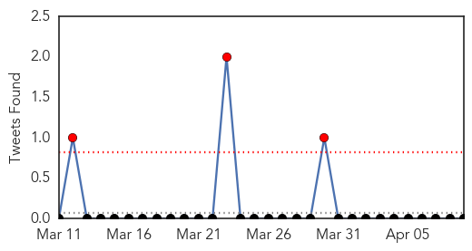

30 Day Trends
Web: 0 alerts, 0 warnings
Twitter: 3 alerts, 0 warnings
Top Articles:
- 0.882
- Europe travelers told to take measles precautions
- 0.874
- Health sector and humanitarian community hold measles outbreak response meeting - Sudan
- 0.861
- Passengers aboard second China-to-Vancouver flight warned about measles
- 0.842
- Passengers exposed to measles on flight from China to Vancouver
- 0.738
- Public Health Agency of Canada issues statement on measles
- 0.616
- Vancouver, Quebec measles update
- 0.615
- Measles on second Air China flight in April linked to first flight in March
- 0.589
- Immunizations Unknown: Pa. School Vaccine System Flawed
Top Tweets:
-
No tweets found for Apr 09, 2015
Web/News Articles
Tweets
Article Locations
Article Confidences